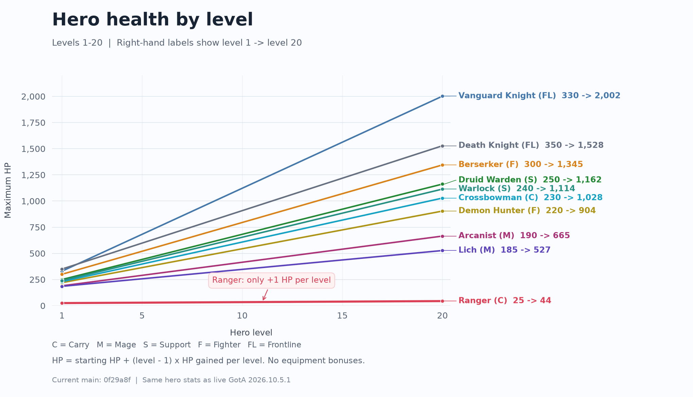
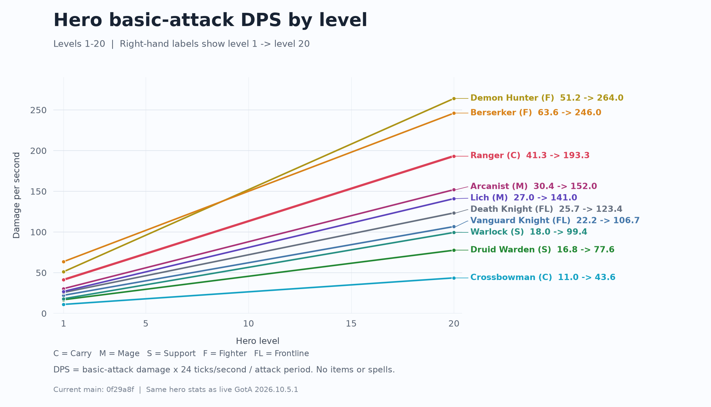
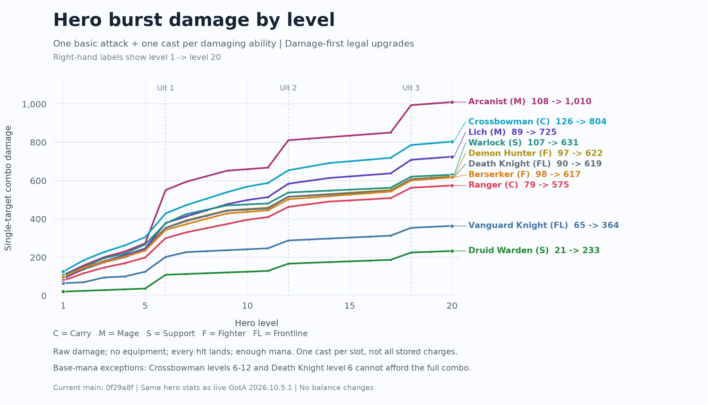

Gods of the Arena
Hero progression
Compare health, sustained basic-attack DPS, and full-combo damage for all ten heroes at levels 1 through 20.
Snapshot: October 5, 2026, from GotA 2026.10.5.1. These charts use base stats without equipment bonuses.
Health by level
Starting HP plus each level's HP gain. Ranger has the lowest base health progression: 25 HP at level 1 and 44 HP at level 20.

Basic-attack DPS by level
Basic-attack damage divided by the attack period, using 24 simulation ticks per second. This excludes spells and equipment.

Burst damage by level
One basic attack plus one cast of every unlocked damaging ability, including the ultimate. Ability points follow the legal upgrade order that maximizes damage at every level. Ultimate ranks unlock at levels 6, 12, and 18.
Every hit lands on the same target, cooldowns are ready, and enough mana is available. Delayed spells still take time to land. Each slot is cast once, even if it holds several charges. Healing and mana restoration do not add damage.
